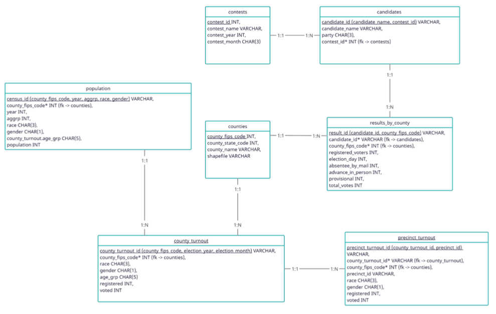
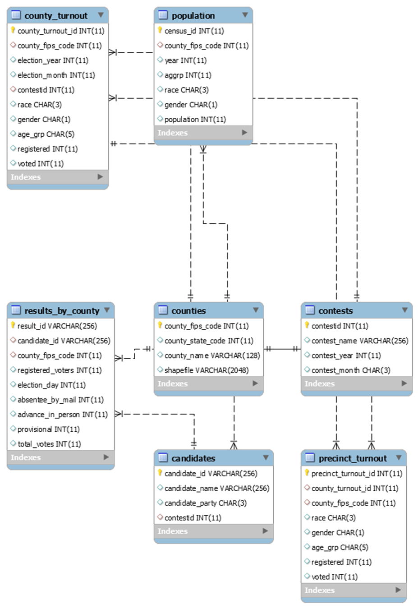

Project Description
The Georgia secretary of state releases election data every year in which there is an election. Data can be found here. Data is also released about the demographic makeup of the electorate, voter turnout by demographic, and county-level data. The formatting of this data is inconsistent and stored in various excel and csv files which can be difficult to extract insights from. Our goal is to build a database of election data to quickly serve various analytical needs of the public. A relational database would be able to dynamically pull queries from across different election years and contests to quickly find trends. The database would store the following types of records across various tables:
The web portal would allow for convenient querying, downloading, and visualization of Georgia election data.
Define the Client
Mainly, our client will be anybody who is interested in or needs election data to make decisions on future elections or analyze past ones. An example of a client would be a campaign trying to look at previous election data to see how they can use that to help themselves win in the next election. Also, a client could be anybody who is interested in election data and would like to see how the previous elections turned out and how they changed over time according to race, gender, county, etc. We believe this could also help groups looking to create a more fair and representative voting population in these counties get a greater sense of the actual turnout already occurring. We would like to reach out to local nonprofits, whose focus is fighting voter suppression, to see if they would have interest in our database after its creation.
Database Sample Questions
ER Diagram
Relational Schema
Data Dictionary
contests
| Column | Data Type | Required | Unique | Description |
|---|---|---|---|---|
| contest_id | INT | yes | yes | Contest Identification Number |
| contest_name | VARCHAR | yes | yes | Contest Name |
| contest_year | INT | yes | no | Contest Year |
| contest_month | CHAR(3) | yes | no | Contest Month |
candidates
| Column | Data Type | Required | Unique | Description |
|---|---|---|---|---|
| candidate_id | VARCHAR | yes | yes | Composite primary key (candidate_name, contest_id). Candidate Identification Number |
| candidate_name | VARCHAR | yes | yes | Candidate Name |
| party | VARCHAR | yes | no | Candidate Party |
| contest_id | INT | yes | no | Foreign key (contests) Contest Identification Number |
results_by_county
| Column | Data Type | Required | Unique | Description |
|---|---|---|---|---|
| result_id | VARCHAR | yes | yes | Result Identification Number |
| candidate_id | VARCHAR | yes | yes | Foreign key (candidates) Candidate Identification Number |
| county_fips_code | INT | yes | no | Foreign Key (counties) Federal Information Processing Standards code which uniquely identified counties |
| registered_voters | INT | yes | no | Number of registered voters within the county |
| election_day | INT | yes | no | Election date within the county |
| absentee_by_mail | INT | yes | no | Number of absentee by mail votes within the county |
| advance_in_person | INT | yes | no | Number of advance in person mail votes within the county |
| provisional | INT | yes | no | Number of provisional votes within the county |
| total_votes | INT | yes | no | Total number of votes within the county |
counties
| Column | Data Type | Required | Unique | Description |
|---|---|---|---|---|
| county_fips_code | INT | yes | yes | Federal Information Processing Standards code which uniquely identified counties |
| county_state_code | INT | yes | yes | County State Identification Number |
| county_name | VARCHAR | yes | yes | County name |
| shapefile | VARCHAR | yes | no | County geospatial data formatted for geographic information system (GUS) use |
county_turnout
| Column | Data Type | Required | Unique | Description |
|---|---|---|---|---|
| county_turnout_id | VARCHAR | yes | yes | Composite primary key (county_fips_code, election_year, election_month) County Turnout Identification Number |
| county_fips_code | INT | yes | yes | Foreign key (counties)Federal Information Processing Standards code which uniquely identifies counties |
| race | CHAR(3) | yes | no | County race turnout |
| gender | CHAR(1) | yes | no | County gender turnout |
| age_grp | CHAR(5) | yes | no | County age group turnout |
| registered | INT | yes | no | Number of citizens within the county registered to vote |
| voted | INT | yes | no | Number of citizens within the county that voted |
precinct_turnout
| Column | Data Type | Required | Unique | Description |
|---|---|---|---|---|
| precinct_turnout_id | VARCHAR | yes | yes | Composite primary key (county_turnout_id, precinct_id) Precinct Turnout Identification Number |
| county_turnout_id | VARCHAR | yes | yes | Foreign key (county_turnout) County Turnout Identification Number |
| county_fips_code | INT | yes | yes | Foreign key (counties) Federal Information Processing Standards code which uniquely identified counties |
| precinct_id | VARCHAR | yes | yes | Precinct Turnout Identification Number |
| race | CHAR(3) | yes | no | Precinct race turnout |
| gender | CHAR(1) | yes | no | Precinct gender turnout |
| registered | INT | yes | no | Number of citizens within the precinct registered to vote |
| voted | INT | yes | no | Number of citizens within the precinct that voted |
population
| Column | Data Type | Required | Unique | Description |
|---|---|---|---|---|
| census_id | VARCHAR | yes | yes | Composite primary key (year, county_fips_code, aggrp, race, gender) Census Identification Number |
| county_fips_code | INT | yes | yes | Foreign key (counties) Federal Information Processing Standards code which uniquely identifies counties |
| year | INT | yes | no | Population year |
| aggrp | INT | yes | no | Population age group - literal age i.e., 0,1,2,3 |
| race | INT | yes | no | Population race |
| gender | CHAR(1) | yes | no | Population gender |
| county_turnout.age_grp | CHAR(5) | yes | no | County turnout age group - categorized in groups i.e., 18-24,25-29 |
| population | INT | yes | no | Population number |